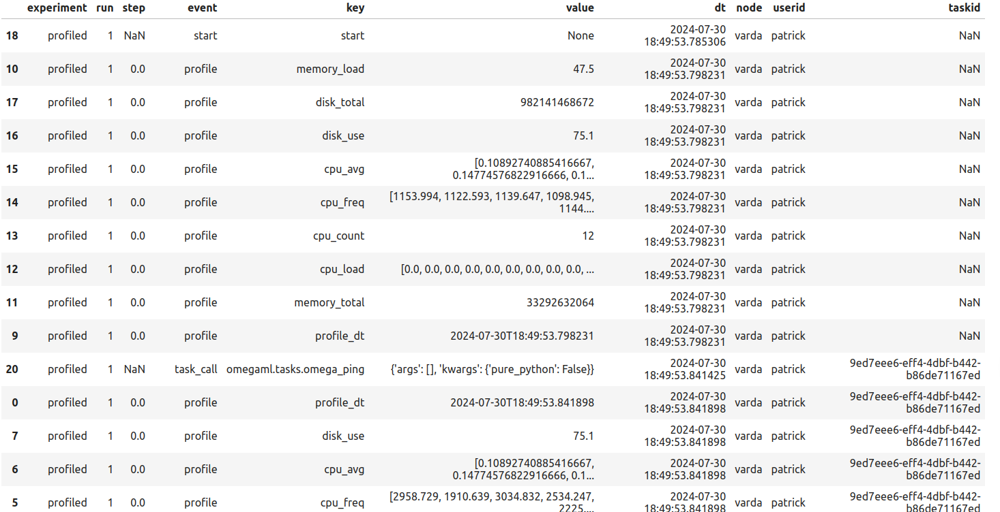

Understanding the Tracking and Monitoring System¶
omega-ml provides experiment and model tracking for development, testing and production use. The tracking system is designed to be simple and flexible, and can be used to track experiments, models, and other artifacts. Any data can be logged to the tracking system, including metrics, parameters, artifacts, system statistics and in general any data that can be serialized.
The tracking system has three distinct components
Experiments: An experiment is a named context, or log, in which data can be logged. Experiments are created using the om.runtime.experiment context manager. This experiment object can be used to log data to the experiment, and to retrieve data from the experiment.
TrackingProviders: A provider implements the backend storage systems that store the tracking data. The default tracking provider logs all data to om.datasets. Other tracking providers can be added by as a plugin, by subclassing TrackingProvider.
DriftMonitors: The drift monitor builds on the tracking system to provide drift detection and monitoring, using the data logged to the tracking system.
Experiments and DriftMonitors can be set up to be automatically attached to the omega-ml runtime’s context (om.runtime), enabling all fit and predict calls to be automatically logged. The data logged includes the input features, output preditions, as well as operational data such as number of calls, latencies and other system statistics.
Experiments¶
An experiment is a named containers, or logs, in which data can be logged in sequence. Experiments are created using the om.runtime.experiment context manager.
with om.runtime.experiment('myexp') as exp:
exp.log_metric('accuracy', 0.5)
exp.log_param('batchsize', 1)
exp.log_data('data', {'X': X, 'Y': Y})
exp.log_artifact(obj, 'model.pkl')
The data logged to an experiment is organized in runs, which are numbered sequentially, starting with run 1. Each run is the collection of data logged to the experiment, and it has a start and an end time. The data logged to the experiment can be retrieved using the exp.data() method.
exp.data()
The data logged to the experiment can be filtered by run number, or by event type. The data can be retrieved as a pandas DataFrame, or as a list of dictionaries.
exp.data(run=1)
exp.data(event='predict')
To retrieve the data as a dictionary, use the raw=True parameter.
exp.data(run=1, raw=True)
To restore an arifact, use the exp.restore_artifact() method.
exp.restore_artifact('mydata.pkl')
=> 'some other object'
Working with large amounts of log data¶
The tracking system is designed to work with large amounts of data. The data is stored in the om.datasets storage system. Each call to one of the exp.log_*() methods stores the data as a single event object. If the data is too large to be retrieved as a single dataframe, use the exp.data(batchsize=N) method to return the data in batches of size N.
for i, df in enumerate(exp.data(batchsize=1)):
print(f"batch {i} is a dataframe of size {len(df)} with columns {df.columns}")
=>
batch 0 is a DataFrame of size 1 with columns {'run', 'key', 'node', 'experiment', 'value', 'userid', 'event', 'dt', 'step', 'name'}
batch 1 is a DataFrame of size 1 with columns {'run', 'key', 'node', 'experiment', 'value', 'userid', 'event', 'dt', 'step', 'name'}
batch 2 is a DataFrame of size 1 with columns {'run', 'key', 'node', 'experiment', 'value', 'userid', 'event', 'dt', 'step'}
batch 3 is a DataFrame of size 1 with columns {'run', 'key', 'node', 'experiment', 'value', 'userid', 'event', 'dt', 'step'}
batch 4 is a DataFrame of size 1 with columns {'run', 'key', 'node', 'experiment', 'value', 'userid', 'event', 'dt', 'step'}
To retrieve the data as a lists of dictionaries instead of DataFrame objects, add the raw=True parameter.
for i, d in enumerate(exp.data(batchsize=1, raw=True)):
print(f"batch {i} is a list of dicts of size {len(d)} with keys {set(d[0].keys())}")
=>
batch 0 is a list of dicts of size 1 with keys {'name', 'node', 'experiment', 'run', 'dt', 'value', 'event', 'key', 'userid', 'step'}
batch 1 is a list of dicts of size 1 with keys {'name', 'node', 'experiment', 'run', 'dt', 'value', 'event', 'key', 'userid', 'step'}
batch 2 is a list of dicts of size 1 with keys {'node', 'experiment', 'run', 'dt', 'value', 'event', 'key', 'userid', 'step'}
batch 3 is a list of dicts of size 1 with keys {'node', 'experiment', 'run', 'dt', 'value', 'event', 'key', 'userid', 'step'}
batch 4 is a list of dicts of size 1 with keys {'node', 'experiment', 'run', 'dt', 'value', 'event', 'key', 'userid', 'step'}
To retrieve the data in raw storage format, use the exp.data(lazy=True, raw=True) method, which returns a Cursor object.
cursor = exp.data(lazy=True, raw=True)
for i, d in enumerate(cursor):
print(f"batch {i} is a dict with keys {set(d.keys())}")
=>
batch 0 is a dict with keys {'data', '_id'}
batch 1 is a dict with keys {'data', '_id'}
batch 2 is a dict with keys {'data', '_id'}
batch 3 is a dict with keys {'data', '_id'}
batch 4 is a dict with keys {'data', '_id'}
Tracking Providers¶
The tracking system is designed to be flexible and extensible. The default tracking provider logs all data to om.datasets. Other tracking providers can be added by subclassing TrackingProvider, and adding them to the defaults.TRACKING_PROVIDERS setting. omega-ml provides several tracking providers out of the box:
default: Logs all data to om.datasets and collects task inputs and outputs and basic statistics
profiling: Logs all data to om.datasets and collects detailed system statistics such as cpu and memory usage
notrack: Disables all tracking
The default tracking provider is used by default. To use a different tracking provider, specify the provider name in the om.runtime.experiment context manager.
with om.runtime.experiment('profiled', provider='profiling') as exp:
om.runtime.ping()
exp.data()
The profiling tracking provider logs detailed system statistics such as cpu and memory usage. The data can be retrieved using the exp.data() method.
All tracking providers support the same API. They main methods are:
start(): Start a new run
stop(): Stop the current run
log_metric(name, value): Log a metric
log_param(name, value): Log a parameter
log_data(name, value): Log data
log_artifact(name, value): Log an artifact
data(): Retrieve the data logged to the tracking provider
Drift Monitors¶
The drift monitor builds on the tracking system to provide drift detection and monitoring. There are two types of drifts that can be monitored:
Data drift: Changes in the distribution of input features. We’re interested in P(X) changing over time. This is implemented as the DataDriftMonitor class.
Model or concept drift: Changes in the distribution of target features. We’re interested in P(Y|X) changing over time. This is implemented as the ModelDriftMonitor class.
The API for the drift monitors is the same for both types of drift. The main methods are:
snapshot(): Take a snapshot of the input and target features
compare(): Compare two snapshots
plot(): Plot the results of the comparison
Monitoring Jobs¶
The drift monitor can be attached to a model, and scheduled to run at regular intervals. The monitor will take snapshots of the input and target features of the model, and compare them to a baseline snapshot. If the distribution of the features has changed significantly, the monitor will raise an alert.
To attach a drift monitor to a model, use the exp.track() method.
with om.runtime.experiment('housing', autotrack=True) as exp:
exp.track('california', monitor=True, schedule='daily')
This will create a new job in om.jobs, as monitors/<experiment>/<model>, that will run the monitor at the specified interval. The monitor has the following format:
# configure
import omegaml as om
# -- the name of the experiment
experiment = '{experiment}'
# -- the name of the model
name = '{meta.name}'
# -- the name of the monitoring provider
provider = '{provider}'
# -- the alert rules
alerts = {alerts}
# snapshot recent state and capture drift
with om.runtime.model(name).experiment(experiment) as exp:
mon = exp.as_monitor(name, store=om.models, provider=provider)
mon.snapshot(since='last')
mon.capture(alerts=alerts)
This does the following:
For the given model, access the DriftMonitor
Take a snapshot of all the input features (X) and output predictions (Y), since the last snapshot
Capture any drift and log an alert if the distribution of the features has changed significantly
The monitor job may be scheduled to run at regular intervals, such as daily, weekly, or monthly. The job can be customized to include additional processing, e.g. to send an email or slack message, to update a dashboard or an external database.
Clearing experiments and monitors¶
Experiments and monitors both keep their data in the om.datasets storage system. For every experiment, the data is stored in a seperate dataset. The monitoring system’s snapshots are stored in the same dataset, as monitors are always linked to an experiment. In general, the tracking system is designed to be immutable, short of manipulating the underlying storage system directly. That is to say, once data is logged, it cannot be deleted or modified. However, experiments and monitors can be cleared, which will remove all data associated with the experiment or monitor.
Warning
To clear an experiment or monitor, use the exp.clear(force=True) method. This will remove all data associated with the experiment or monitor, including all underlying events. This action is not reversible.